Mantelier · For venues
How to claim your restaurant, hotel or private-chef page, keep it up to date, and put your own evenings in front of the people who travel for them. Everything happens in the Mantelier app, in a few minutes at a time.
About these screens. They are the app as it is built today, filled with an invented venue (Maison Aurelle) and invented events, the same as in our lookbook.
Step 1 · Claim
Not on Mantelier yet? Write to claimedvenues@mantelier.app.
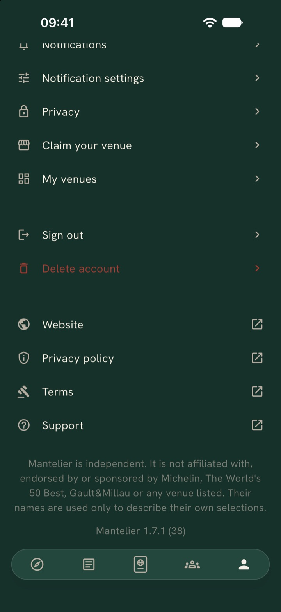
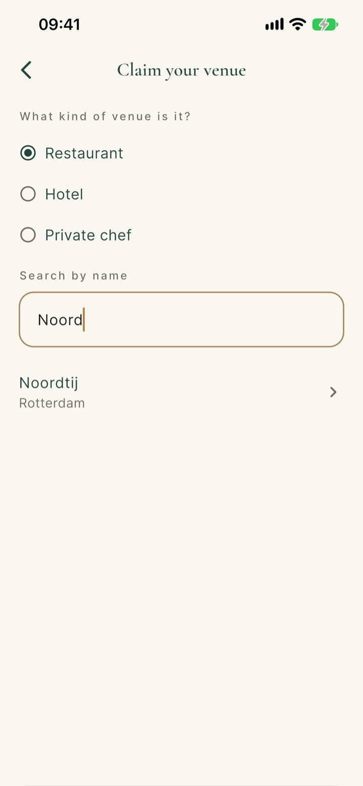
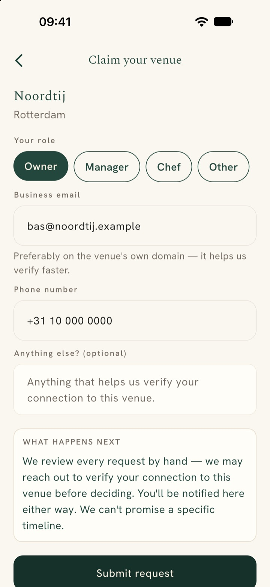
Step 2 · Your page
Once your claim is approved, your venue appears under Profile → My venues. The first time, a short welcome explains how hosting works.
From there you manage your story, website and phone, opening hours, booking window, team, photos and events. Preview my page shows your page exactly as guests will see it, including anything still waiting for review.
Several people can manage the same venue. Each makes their own claim.
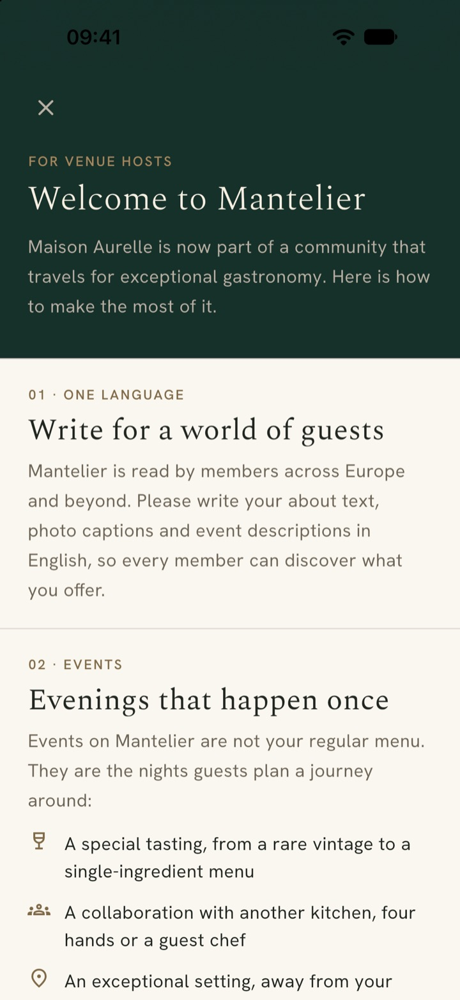
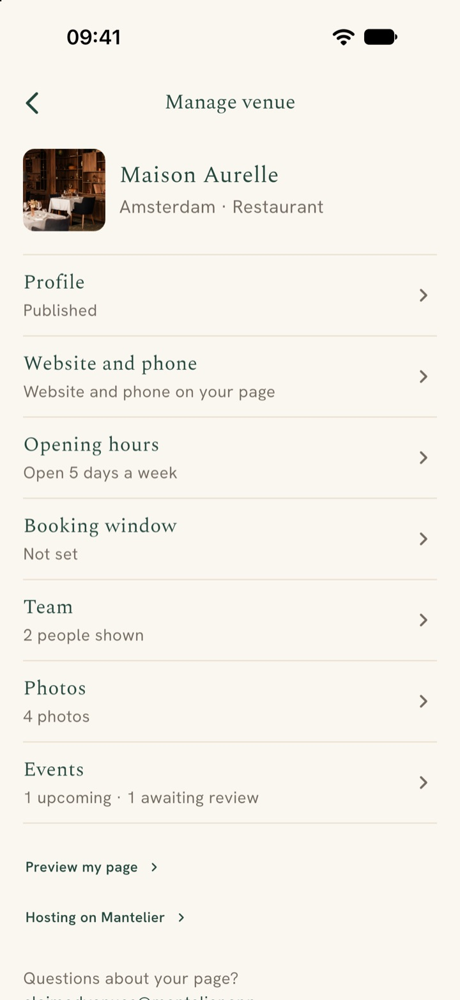
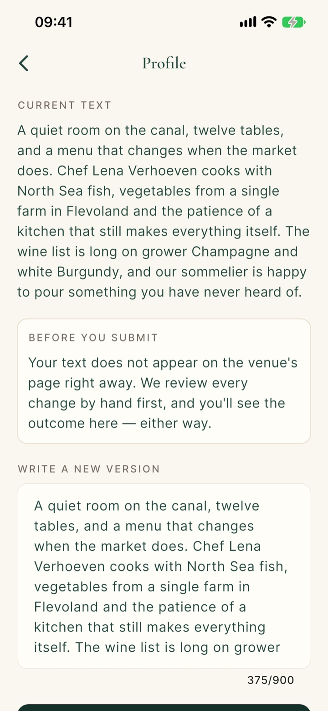
Step 3 · Making changes
Practical details are yours to keep current and show at once. Anything new that guests read or see is checked by hand first, so every page keeps the same standard. You always see the outcome in the app.
| What you change | When guests see it |
|---|---|
| Website and phone | Straight away |
| Opening hours and closed days | Straight away |
| Booking window | Straight away |
| Photo order, framing and card photo | Straight away |
| Changes to an event that is already live | Straight away |
| Taking someone off your team | Straight away |
| Your description | After review |
| New photos | After review |
| Adding or updating a team member | After review |
| A new event | After review |
Awards, guide rankings and your location come from the guides and our own checks, not from venues, so they stay the same for everyone.
Photos
Your first photo is your cover: it opens your page. Use the arrows to change the order, and Adjust framing to choose exactly what shows. The small card photo used in Explore, search and Passport can be a different one.
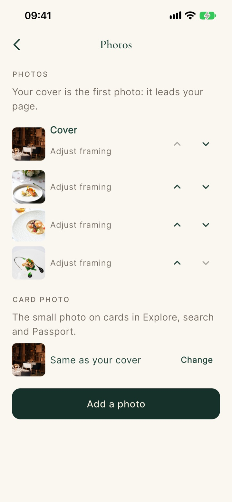
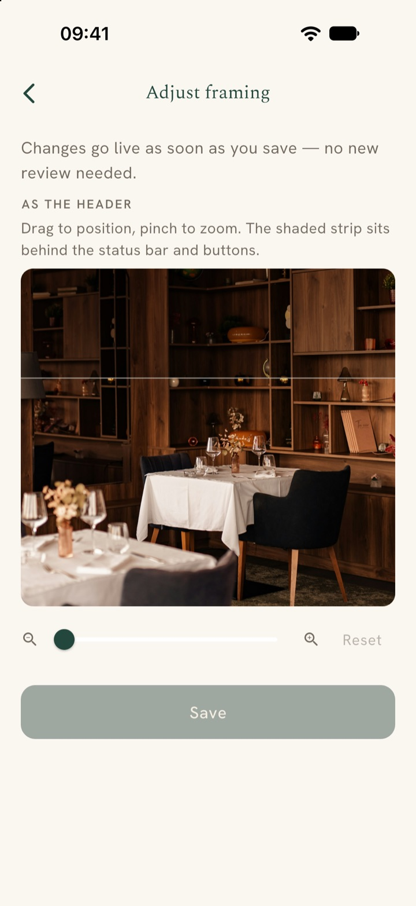
Events
Events on Mantelier are not your regular menu. They are the nights guests plan a journey around: a four-hands dinner, a guest chef, a winemaker at the table, a gala.
Events can be added up to a year ahead. Once live, you can still edit them, and changes show straight away. If plans change you can cancel: the event stays listed as cancelled, so anyone planning to go knows.
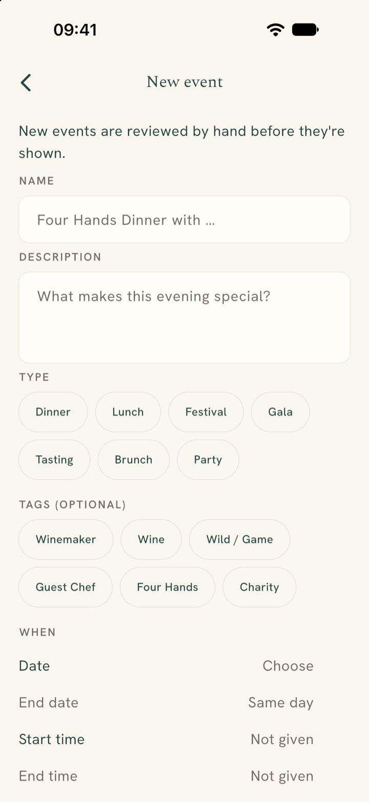
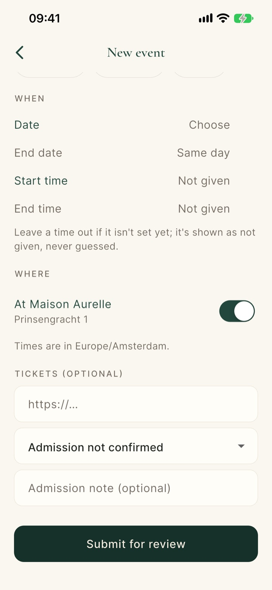
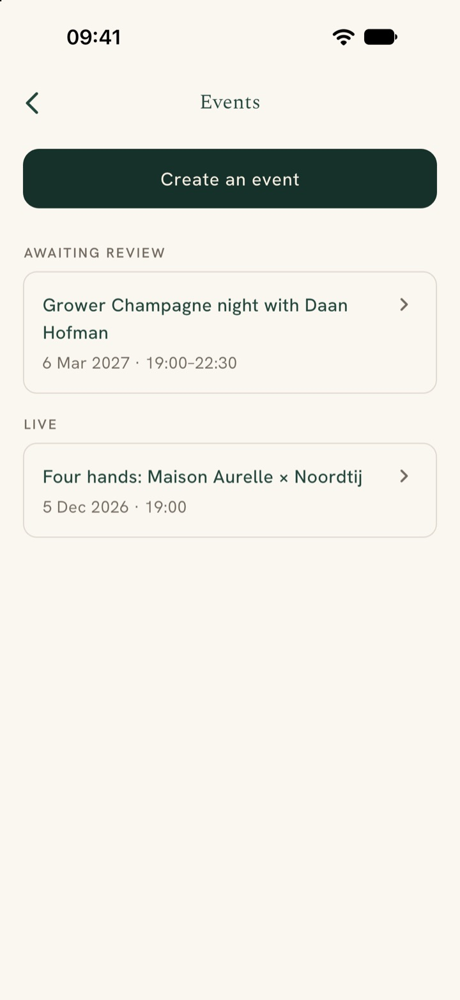
Booking window
Tell us when your bookings open: a set number of days ahead, once a month, or by season. Members who plan a month at your restaurant get a reminder the day before that month opens, so the guests who travel furthest don't miss out.
It takes a minute and applies as soon as you save.
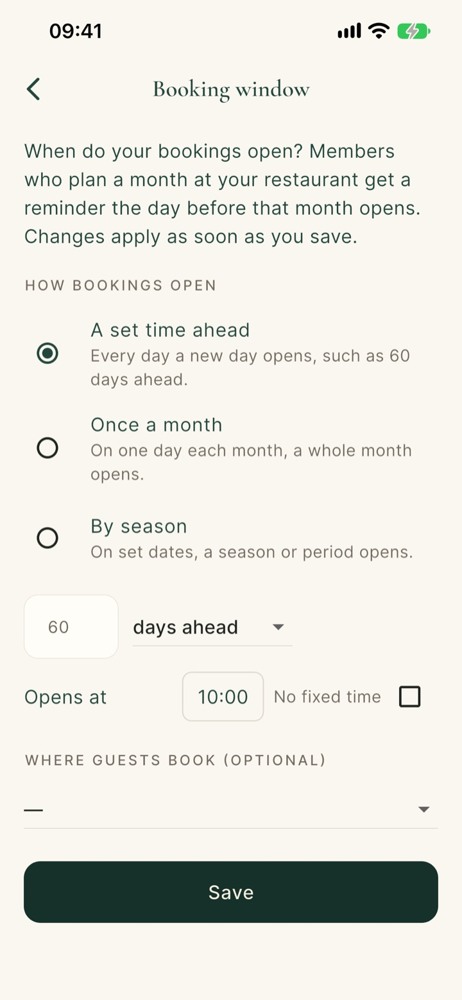
Good to know
In English. Mantelier is read by members across Europe and beyond.
We review by hand and can't promise a set time, but we aim to be quick. You see the outcome in the app either way, with a note if something needs changing.
No. Recognition comes from the guides themselves and is the same for every venue. Your photos, story, team and events are yours.
Yes. Each person claims the venue from their own account.
Anything else? Write to claimedvenues@mantelier.app, or see how a finished page looks in the lookbook.